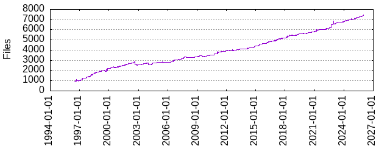

| Extension | Files (%) | Lines (%) | Lines/file |
|---|---|---|---|
| 1 (0.01%) | 116 (0.00%) | 116 | |
| 0 | 18 (0.24%) | 334 (0.01%) | 18 |
| 1 | 1 (0.01%) | 618 (0.01%) | 618 |
| HOT | 1 (0.01%) | 520 (0.01%) | 520 |
| LICENSE | 1 (0.01%) | 279 (0.01%) | 279 |
| SSL | 1 (0.01%) | 82 (0.00%) | 82 |
| ac | 1 (0.01%) | 2542 (0.06%) | 2542 |
| addons | 1 (0.01%) | 553 (0.01%) | 553 |
| affix | 4 (0.05%) | 135 (0.00%) | 33 |
| bad | 2 (0.03%) | 7 (0.00%) | 3 |
| barrier | 1 (0.01%) | 197 (0.00%) | 197 |
| bin | 1 (0.01%) | 1 (0.00%) | 1 |
| build | 293 (3.93%) | 15270 (0.35%) | 52 |
| c | 1514 (20.32%) | 1545036 (34.95%) | 1020 |
| cache | 1 (0.01%) | 6107 (0.14%) | 6107 |
| conf | 11 (0.15%) | 39 (0.00%) | 3 |
| config | 23 (0.31%) | 427 (0.01%) | 18 |
| control | 111 (1.49%) | 551 (0.01%) | 4 |
| cpp | 4 (0.05%) | 1492 (0.03%) | 373 |
| crl | 5 (0.07%) | 79 (0.00%) | 15 |
| crt | 29 (0.39%) | 746 (0.02%) | 25 |
| css | 2 (0.03%) | 327 (0.01%) | 163 |
| csv | 5 (0.07%) | 16 (0.00%) | 3 |
| cygwin | 1 (0.01%) | 50 (0.00%) | 50 |
| d | 1 (0.01%) | 94 (0.00%) | 94 |
| darwin | 1 (0.01%) | 12 (0.00%) | 12 |
| dat | 35 (0.47%) | 226994 (5.14%) | 6485 |
| data | 52 (0.70%) | 70737 (1.60%) | 1360 |
| def | 1 (0.01%) | 5 (0.00%) | 5 |
| dict | 3 (0.04%) | 28 (0.00%) | 9 |
| dynSQL | 1 (0.01%) | 11 (0.00%) | 11 |
| el | 1 (0.01%) | 19 (0.00%) | 19 |
| euc_jp | 1 (0.01%) | 83 (0.00%) | 83 |
| example | 4 (0.05%) | 164 (0.00%) | 41 |
| freebsd | 1 (0.01%) | 14 (0.00%) | 14 |
| guess | 1 (0.01%) | 1815 (0.04%) | 1815 |
| gv | 2 (0.03%) | 142 (0.00%) | 71 |
| h | 988 (13.26%) | 200434 (4.53%) | 202 |
| header | 1 (0.01%) | 603 (0.01%) | 603 |
| html | 6 (0.08%) | 184 (0.00%) | 30 |
| ico | 1 (0.01%) | 7 (0.00%) | 7 |
| in | 21 (0.28%) | 2459 (0.06%) | 117 |
| json | 1 (0.01%) | 144 (0.00%) | 144 |
| key | 27 (0.36%) | 698 (0.02%) | 25 |
| l | 13 (0.17%) | 9000 (0.20%) | 692 |
| ldif | 1 (0.01%) | 32 (0.00%) | 32 |
| links | 1 (0.01%) | 54 (0.00%) | 54 |
| linux | 1 (0.01%) | 8 (0.00%) | 8 |
| list | 2 (0.03%) | 4409 (0.10%) | 2204 |
| m4 | 12 (0.16%) | 2815 (0.06%) | 234 |
| man | 1 (0.01%) | 43 (0.00%) | 43 |
| map | 77 (1.03%) | 147267 (3.33%) | 1912 |
| mc | 1 (0.01%) | 5 (0.00%) | 5 |
| mcv | 1 (0.01%) | 103 (0.00%) | 103 |
| md | 5 (0.07%) | 452 (0.01%) | 90 |
| mk | 35 (0.47%) | 1469 (0.03%) | 41 |
| netbsd | 1 (0.01%) | 6 (0.00%) | 6 |
| non-ASCII | 1 (0.01%) | 38 (0.00%) | 38 |
| openbsd | 1 (0.01%) | 6 (0.00%) | 6 |
| out | 826 (11.09%) | 490015 (11.09%) | 593 |
| parallel | 1 (0.01%) | 237 (0.01%) | 237 |
| parser | 1 (0.01%) | 97 (0.00%) | 97 |
| pgc | 70 (0.94%) | 7138 (0.16%) | 101 |
| pl | 331 (4.44%) | 80484 (1.82%) | 243 |
| plist | 1 (0.01%) | 17 (0.00%) | 17 |
| plot | 10 (0.13%) | 127 (0.00%) | 12 |
| pm | 17 (0.23%) | 10458 (0.24%) | 615 |
| png | 10 (0.13%) | 586 (0.01%) | 58 |
| po | 467 (6.27%) | 926162 (20.95%) | 1983 |
| pro | 8 (0.11%) | 8 (0.00%) | 1 |
| py | 4 (0.05%) | 846 (0.02%) | 211 |
| r0 | 6 (0.08%) | 68 (0.00%) | 11 |
| rc | 2 (0.03%) | 37 (0.00%) | 18 |
| regress | 1 (0.01%) | 31 (0.00%) | 31 |
| rules | 2 (0.03%) | 2667 (0.06%) | 1333 |
| s | 1 (0.01%) | 0 (0.00%) | 0 |
| sample | 5 (0.07%) | 1111 (0.03%) | 222 |
| samples | 2 (0.03%) | 108 (0.00%) | 54 |
| sed | 1 (0.01%) | 15 (0.00%) | 15 |
| sgml | 422 (5.67%) | 325531 (7.36%) | 771 |
| sh | 6 (0.08%) | 415 (0.01%) | 69 |
| shlib | 1 (0.01%) | 436 (0.01%) | 436 |
| solaris | 1 (0.01%) | 8 (0.00%) | 8 |
| source | 5 (0.07%) | 901 (0.02%) | 180 |
| spec | 152 (2.04%) | 12258 (0.28%) | 80 |
| sql | 820 (11.01%) | 184557 (4.18%) | 225 |
| star | 1 (0.01%) | 143 (0.00%) | 143 |
| stderr | 68 (0.91%) | 7046 (0.16%) | 103 |
| stdout | 89 (1.19%) | 3638 (0.08%) | 40 |
| stop | 15 (0.20%) | 2735 (0.06%) | 182 |
| sub | 1 (0.01%) | 2354 (0.05%) | 2354 |
| supp | 1 (0.01%) | 229 (0.01%) | 229 |
| svg | 5 (0.07%) | 563 (0.01%) | 112 |
| syn | 1 (0.01%) | 5 (0.00%) | 5 |
| te | 1 (0.01%) | 261 (0.01%) | 261 |
| ths | 1 (0.01%) | 17 (0.00%) | 17 |
| tokens | 1 (0.01%) | 26 (0.00%) | 26 |
| trace | 9 (0.12%) | 414 (0.01%) | 46 |
| trailer | 1 (0.01%) | 2261 (0.05%) | 2261 |
| tuplock | 1 (0.01%) | 233 (0.01%) | 233 |
| txt | 42 (0.56%) | 28441 (0.64%) | 677 |
| type | 1 (0.01%) | 18 (0.00%) | 18 |
| win32 | 1 (0.01%) | 83 (0.00%) | 83 |
| xml | 1 (0.01%) | 8 (0.00%) | 8 |
| xs | 2 (0.03%) | 351 (0.01%) | 175 |
| xsl | 10 (0.13%) | 2396 (0.05%) | 239 |
| y | 10 (0.13%) | 27288 (0.62%) | 2728 |
| yml | 4 (0.05%) | 1287 (0.03%) | 321 |
| zi | 1 (0.01%) | 4300 (0.10%) | 4300 |